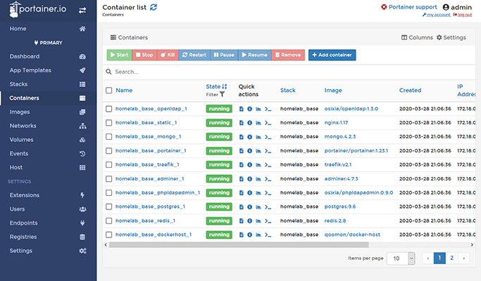
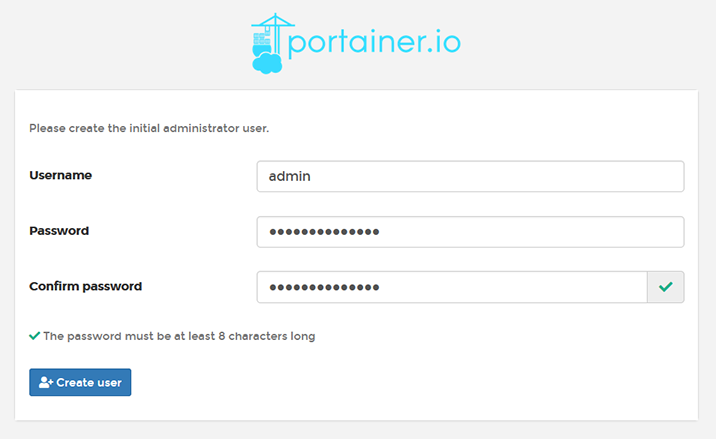
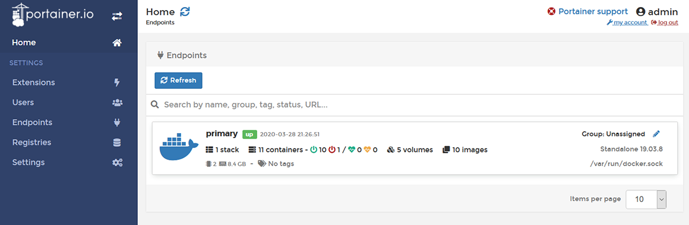
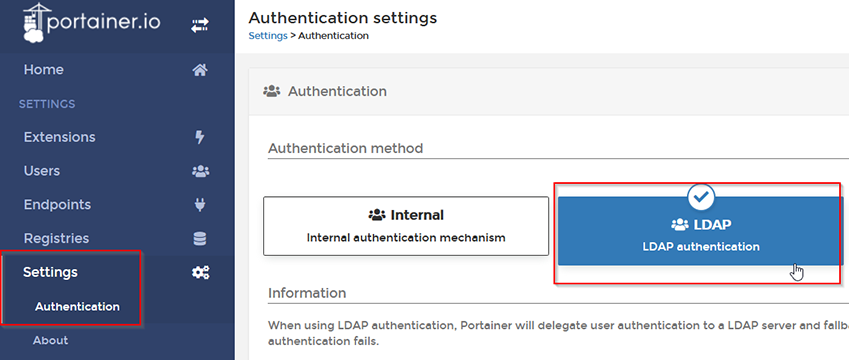
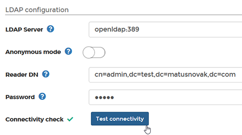
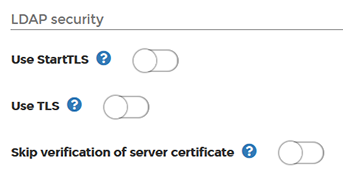
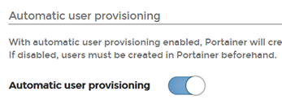
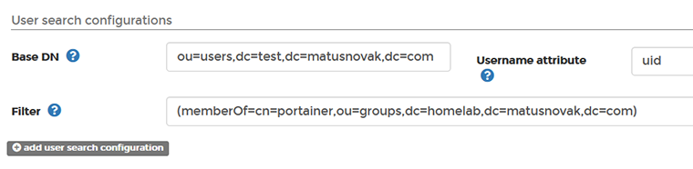

https://portainer.DOMAIN_NAME/base (deployed via ./deploy.sh base).Making Docker Management Easy. Build and manage your Docker environments with ease today.
– portainer.io
Before configuring the LDAP authentication, make sure you have created at least one user via the phpLdapAdmin and added that user to the “portainer” group. Read here how to add a new LDAP user.
First create the administrator account. You are free to choose any username or password.

Next, you should automatically see the the Docker endpoint with ~10 running containers.

To setup LDAP authentication, navigate to Settings -> Authentication and click “LDAP” from the middle column.

Next, specify the LDAP server hostname followed by a port, reader credentials, and a password. Don’t forget to test the connectivity too.
openldap:389. This is the hostname to the OpenLDAP Docker container within the internal Docker network. The openldap resolves to 172.18.0.X.cn=admin,DOMAIN_COMPONENT. This is the login DN as specified in the phpLdapAdmin documentation.ADMIN_PASSWORD from .env file.
For the LDAP security leave everything to Off. The LDAP communication happens only within the Docker network and there is no outside access to that. There would be no point doing TLS anyway.

Enable automatic user provisioning. The Portainer will automatically create users if a new user logs in based on LDAP user credentials.

Finally, you will need to set the Base DN to the organisation unit of users from LDAP. LDAP Users are created in organisational unit ou=users,DOMAIN_COMPONENT (For example: ou=users,dc=example,dc=homelab,dc=com). You don’t need to fill in the group details because that feature is only useful in Portainer Enterprise mode (you need a license).
ou=users,DOMAIN_COMPONENT.uid.(memberOf=cn=portainer,ou=groups,DOMAIN_COMPONENT).
That’s all.
To make the user (that has logged in via LDAP credentials) an administrator, simply go to the Settings -> Users, select the correct user, and set the “Administrator” to On. If the user is not visible in the list of users, make sure the user has logged in at least once.